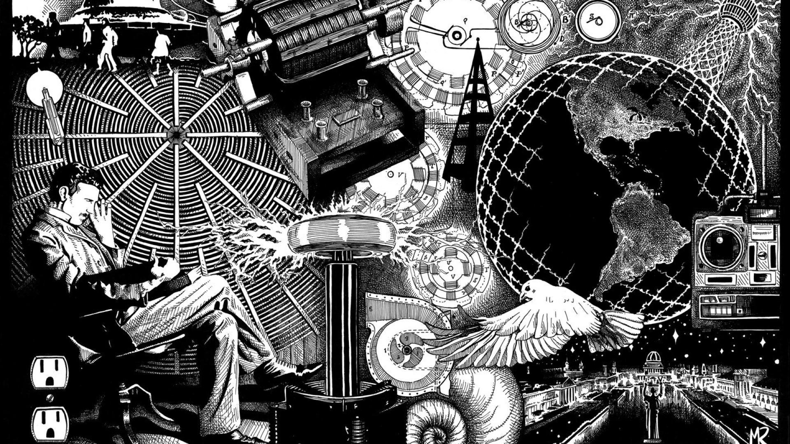
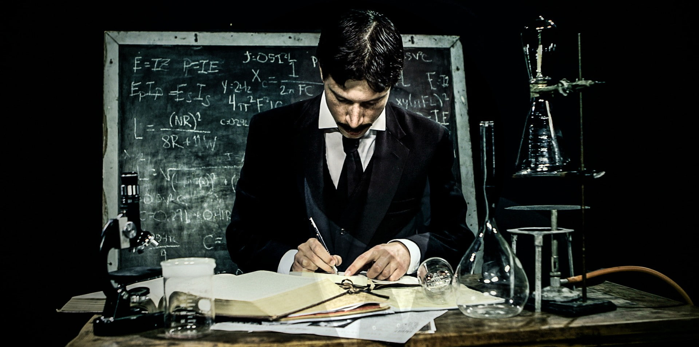

• Nikola Tesla was a Serbian-American inventor, electrical engineer, mechanical engineer, and futurist. He was born on July 10, 1856, in Smiljan, Croatia, which was then part of the Austro-Hungarian Empire.
• Throughout his life, Tesla held numerous patents and worked on various projects, including the development of the Tesla coil, the induction motor, and wireless transmission of energy. His inventions and ideas laid the foundation for many modern technologies that we use today.
• Tesla was a visionary and had many ambitious ideas, such as the concept of wireless power transmission and the development of a "World Wireless System" for global communication. Although some of his ideas were considered ahead of his time, his contributions to science and technology continue to inspire and influence generations of inventors and engineers.
• Nikola Tesla passed away on January 7, 1943, in New York City, leaving behind a legacy of innovation and scientific achievements that continue to shape the world we live in today.
• Alternating Current (AC) System: Tesla's AC system revolutionized the electrical power distribution, making it more efficient and practical.
• Tesla Coil: This invention is widely used today for various purposes, including high-voltage experimentation, wireless power transmission, and producing impressive electrical displays.
• Induction Motor: Tesla's invention of the induction motor made significant advancements in the field of electric motors, enabling the widespread use of electrical power in various industries.
• Wireless Power Transmission: Tesla envisioned a world where power could be transmitted wirelessly, and he conducted experiments and demonstrations to showcase the possibilities of wireless power transmission.
• Radio: Tesla's contributions to radio technology played a crucial role in the development of wireless communication systems.
Nikola Tesla's inventions and contributions have had a profound impact on society:
• Advancement of Electrical Power Systems: Tesla's AC system is the foundation of modern power distribution, enabling electricity to be transmitted over long distances and powering homes, businesses, and industries worldwide.
• Technological Innovations: Tesla's inventions and research laid the groundwork for various technologies, including wireless communication, radio, robotics, and remote control.
• Electricity Accessibility: Tesla's work on AC power made electricity more accessible and affordable, improving the quality of life for countless individuals and communities.
• Inspiration for Future Inventors: Tesla's visionary ideas continue to inspire and influence scientists, engineers, and inventors in their pursuit of innovative solutions to societal challenges.

Nikola Tesla's legacy as a brilliant inventor and his contributions to science and technology remain significant to this day, shaping the modern world we live in.